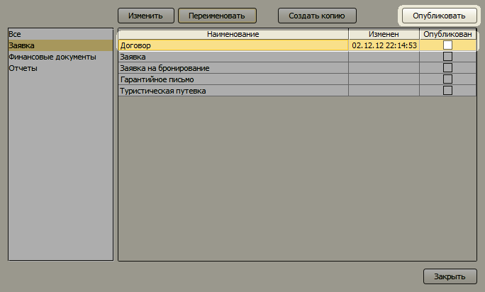

Управление шаблонами
- Изменение шаблона
- Публикация модифицированного шаблона (для многопользовательской версии)
- Переименование печатной формы заявки
- Создание копии печатной формы заявки
- Удаление печатной формы заявки из списка "Печать"
Изменение шаблона
Чтобы изменить шаблон документа, откройте форму "Шаблоны" (Главное меню → Настройки → Шаблоны).
Выберите нужный документ в списке и нажмите кнопку "Изменить".
Откроется шаблон в стандартном редакторе Microsoft Excel или Microsoft Word. После редактирования
шаблона не забудьте его сохранить. После сохранения шаблона он будет применяться при формировании
соответствующих печатных документов.
Публикация модифицированного шаблона
Для многопользовательской версии, чтобы остальные пользователи могли воспользоваться модифицированным
шаблоном, необходимо после каждого изменения публиковать модифицированный шаблон. Для этого
выберите шаблон в списке и нажмите кнопку "Опубликовать". Через 1-2 минуты внесенные изменения будут
доступны на других компьютерах.

Переименование печатной формы заявки
Для каждой печатной формы заявки вы можете задать другое наименование, которое будет отображаться
в меню "Печать" на форме "Заявки".
Создание копии печатной формы заявки
Чтобы создать копию печатной формы, выберите шаблон и нажмите кнопку "Создать копию".
Введите имя новой печатной формы и нажмите кноку "ОК". Откроется шаблон исходной печатной формы.
Внесите в него требуемые изменения и сохраните. В списке шаблонов появится новая печатная форма.
Для многопользовательской версии, чтобы другие
пользователи могли пользоваться этой копией шаблона, необходимо дополнительно ее опубликовать.
Удаление печатной формы заявки из списка "Печать"
Вы можете удалить неиспользуемые печатные формы из списка меню "Печать" заявки. Для этого
выберите шаблон и нажмите правую кнопку мыши. В появившемся меню нажмите пункт "Скрыть".
Остались вопросы? Напишите нам на e-mail